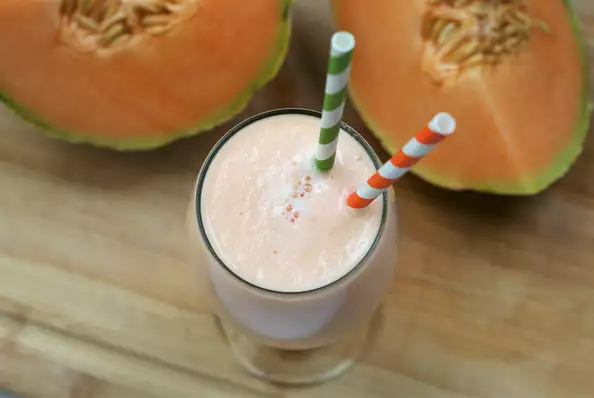

Cantaloupe Frenzy

Sweet like diabetes
The first cocktail in the world without vicious alcohol.
But also the first Cocktail with all the amphetamines your heart need to get you going.
- 1 Cantaloupe - peeled,seeded and cubed
- 3 tablespoons white sugar, or to taste
- 2 cups ice cubes
Step 1
Place canatloupe cubes and ice into the container of a blender. Add sugar, and puree. Pour into tall glasses and server immediately.